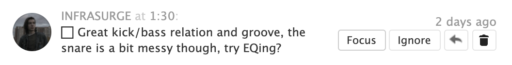
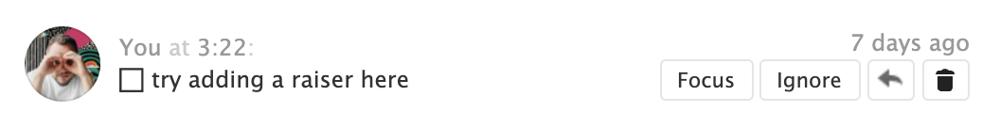

Hi there, this is
SoundCloud Task Manager
Use it to work with comments as they are tasks
Praise yourself for what you have already done

Choose what to focus on to get started

Ignore everything else
Install to Chrome
and finish your next track
SoundCloud Task Manager is the first part of the
Release Music Framework
The second part is this simple guide
- Listen to your track and write feedback on SoundCloud
- Use SoundCloud Task Manager for Chrome to deal with comments as they are tasks
- Choose a task to start with today
- Render each working session and upload to SoundCloud again
- Are there any tasks left? Do at least 1 per week
- No? Release this track now!
- Use this free Online Mixer to compare different renders side by side and time-synced in a simple player
- Find out more details about the RMF workflow in the Notion post
· Now you have both the guide and the tool to follow it ·